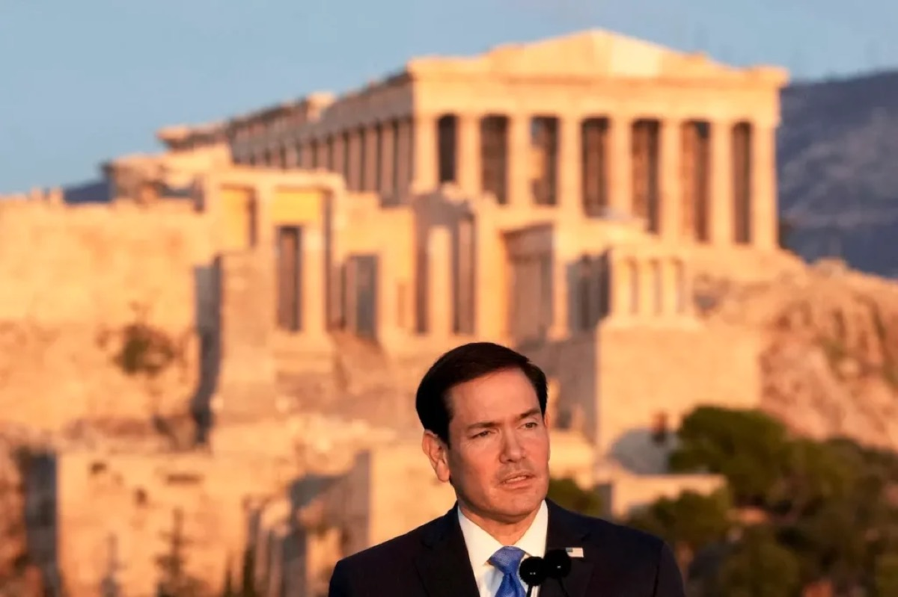

Sardes’ten Tahran’a: Rubio, tarihi çarpıtmaya devam ediyor
ABD Dışişleri Bakanı Marco Rubio’nun Atina’da yaptığı konuşmada Antik Yunan ve İran tarihine ilişkin ileri sürdüğü görüşler, tarihçiler arasında tartışmalara yol açtı. Gazetemiz yazarlarından, Kaliforniya…

ABD Dışişleri Bakanı Marco Rubio’nun Atina’da yaptığı konuşmada Antik Yunan ve İran tarihine ilişkin ileri sürdüğü görüşler, tarihçiler arasında tartışmalara yol açtı. Gazetemiz yazarlarından, Kaliforniya Üniversitesi’nden tarihçi Touraj Daryaee’nin sosyal medyada başlayan ve kısa sürede uluslararası basında yankı bulan tepkisinin ardından Tehran Times, kendisiyle bir söyleşi yapıp 10 Ekim’de yayınladı. Daryaee’nin Batı medeniyeti, emperyalizm ve tarih çarpıtmaları üzerine önemli değerlendirmeler içeren bu söyleşisini okurlarımız için Türkçeye çevirdik.
Atinalıların, Kserkses’in MÖ 480’de Yunanistan’ı istilasından önce, MÖ 498’de Ahameniş İmparatorluğu’nun önemli idarî merkezlerinden Sardes’in yakılmasına katıldıklarını belirttiniz. Bu olay, Rubio’nun sunduğu tarih anlatısına bakışımızı nasıl değiştiriyor?
Bence Rubio‘nun konuşmasının dayandığı temel varsayım bütünüyle yanlış. Burada söz konusu olan Doğu ile Batı arasında bir savaş değil, üç kıtaya yayılmış bir dünya imparatorluğu ile denizin öte yakasındaki birtakım Yunan şehir devletleri arasındaki çatışmaydı. Dolayısıyla meseleye bu açıdan baktığımızda, anlatının daha en baştan yanlış bir temele oturduğunu görüyoruz.
Öte yandan Atinalılar ve müttefikleri gerçekten de MÖ 489’da gelerek Pers İmparatorluğu‘na bağlı Lidya Satraplığı’nın merkezini yaktılar. Şehri ateşe verdiler, yağmaladılar ve Kibele Tapınağı‘yla birlikte her şeyi tahrip ettiler. Elbette hiçbir imparatorluk böyle bir saldırı karşısında sessiz kalmaz; intikam almak ister. MÖ 480’de Akropolis‘in yakılması da esasen yıllar önce yaşananların intikamıydı.
Rubio Büyük İskender, Sezar ve Hernán Cortés gibi isimleri büyük hedefler peşinde koşan fatihler olarak gösteriyor. Bu isimleri tercih etmesi, onun Batı medeniyeti tanımına dair ne ortaya söylüyor?
İmparatorluklar, güçleri yettiğince genişlemeye çalışırlar. Elbette her imparatorluğun niteliği farklıdır. Antik Çağ’da Büyük İskender ve Sezar gibi dünyayı fethetmeyi amaçlayan hükümdarlar görüyoruz.
Fakat Hernán Cortés‘in farklı bir tarihsel olguyu temsil ettiğini düşünüyorum. O, Avrupalıların Amerika, Afrika ve Asya kıtalarını sistemli biçimde yağmalamaya, zenginliklerine el koymaya, insanları köleleştirerek bedava işgücü sağlamaya ve kapitalist bir ekonomi inşa etmeye giriştiği erken modern dönemin bir figürüdür. Avrupa ekonomisinin diğer kıtalardakilerden daha ileri bir düzeye ulaşmasında, bu kıtaların doğal kaynaklarının gasp edilmesinin de payı vardı.
Bu durum, Yunanistan‘a ve Roma‘ya şan ve şöhret kazandırmayı amaçlayan Büyük İskender‘in ya da Sezar‘ın seferlerinden farklıydı.
Rubio konuşmasını, Antik Atina’da yurttaşların demokratik meclis toplantıları için bir araya geldiği Pnüks Tepesi’nde yaptı. Sizce neden bu tarihî mekânı seçti ve bununla nasıl bir mesaj vermek istedi?
Rubio bu mekânı seçerken akıllıca bir tercihte bulundu; çünkü ABD şu anda İran‘la savaş hâlinde. Yunanistan‘a giderek adeta “Bakın, İranlılar 2500 yıl önce de aynı şeyi yapıyordu” diyebiliyor. Sanki o günden bugüne hiçbir şey değişmemiş gibi!
Tarihi, İran‘a ve daha genel olarak günümüzdeki çatışmanın karşı tarafında yer alanlara karşı ideolojik bir araç olarak kullanmaya çalışıyor.
Tarihsel göndermeler yapmak istiyorsanız burası kuşkusuz son derece uygun bir yer. Ne var ki Rubio‘nun bunu oldukça sakil bir biçimde yaptığını düşünüyorum. Biz İran‘da Persepolis‘e gidip “İskender Persepolis’i yaktı, işte Amerikalılar da bugün aynı şeyi yapmak istiyor” demiyoruz.
Rubio, Batı medeniyetinin köklerini Antik Yunan ve Roma’dan başlatarak Hristiyanlık ve Avrupa üzerinden ABD’ye uzanan bir çizgide ele alıyor. Bu anlatı tarihsel açıdan ne kadar doğru? Persler, Yunanlar ve diğer antik medeniyetler arasındaki kültürel etkileşimleri hangi yönleriyle göz ardı ediyor?
Rubio burada gerçekten çok iddialı bir işe kalkışıyor. Ailesi Küba‘dan gelen Rubio‘nun temsil ettiği ABD‘nin Batı medeniyetinin mirasçısı olduğu düşüncesi bütünüyle doğru değil.
Aslında Batı’nın kültürel mirasının doğrudan Antik Yunan’a dayandığı fikri, yalnızca iki ya da üç yüzyıllık geçmişi olan, görece yeni bir olgu. Antik Çağ ile modern dönem arasında, Orta Çağ’da yaşananların büyük bölümünü atlayan ve önemli tarihsel gelişmeleri görmezden gelen yapay bir köprü kurulmuş durumda. Bu da başlı başına bir tarihsel çarpıtma.
Buna karşılık Yunanistan ile İran tarih boyunca son derece yoğun ilişkiler içinde olmuştur. Birbirlerinden pek çok şey almış, Antik Çağ’dan günümüze uzanan geleneklerinde sayısız ortak özellik geliştirmişlerdir. ABD ve Almanya ise hem Antik Yunan’dan hem de bugünkü Yunanistan‘dan çok daha uzaktadır.
Rubio, konuşmasına Ahamenişlerin Atina’yı istilasıyla başlayıp daha sonra günümüz İran yönetimini eleştiriyor. Sizce burada Antik Pers İmparatorluğu ile modern İran arasında bilinçli bir bağ mı kuruluyor? Yoksa böyle bir yorum konuşmanın kapsamını aşar mı?
Kesinlikle bilinçli bir bağ kuruluyor. Rubio, ne kadar temelsiz olursa olsun, geçmişle bugün arasında bir bağlantı kurmaya çalışıyor. Aslında şunu söylüyor: “İran’la bugün yaşadıklarımıza ve İran’a karşı yaptıklarımıza bakın. Sizin MÖ 480 yılında karşı karşıya kaldığınız şey de tam olarak buydu.”
Buradaki çarpıtma şu: Ortadoğu‘nun dört bir yanında askerî üsleri bulunan ülke ABD‘dir. İran‘ı bombalayanlar ABD ve İsrail‘dir. İranlılar ise Avrupalılara ya da Amerikalılara savaş açmak için ne Avrupa‘ya ne de ABD‘ye gitmişlerdir.
Son iki yüzyılda Batı’nın Doğu’ya yönelik müdahalelerine dikkat çekiyorsunuz. Batı’nın kendisini özgürlüğün savunucusu olarak sunmasıyla başka ülkelere müdahalelerle dolu tarihsel sicili arasındaki çelişkiyi en iyi hangi olaylar ortaya koyuyor?
Bence Rubio‘nun aklında birkaç husus vardı. Bunlardan biri, Batı’nın geçmişinden dolayı özür dilememesi gerektiğini savunmaktı.
Fakat Yunanistan‘dan büyük bir medeniyet olarak söz ederken, son iki ya da üç yüzyılda dünyanın dört bir yanında yaşayan insanların başından geçenlere hiç değinmedi. Ülkeleri saldırıya uğrayan, yaşadıkları yerler bombalanıp yağmalanan, kendileri köleleştirilen insanlardan söz etmedi.
Oysa Batılı ülkelerin, özellikle de ABD‘nin bugün bunların bulundukları konuma gelmesinde bu eylemlerin önemli bir payı vardır. Bu tarihi görmezden gelmek, düpedüz dürüstlükten uzak bir tutumdur.
Rubio, Batı medeniyetine ve ABD’nin gücüne ilişkin tasavvurunu ortaya koyarken Antik Çağ tarihinden yararlandı. Sizce kendisine özgü bir siyasî doktrin geliştirerek 2028 başkanlık seçimlerinde adaylığının temellerini mi atmaya çalışıyor?
Bence konuşması, hem Avrupa‘da hem de ABD‘de göçten, nüfus yapısındaki değişimlerden ve toplumların dinî bileşimindeki dönüşümden kaygı duyan Avrupalı dinleyici kitlesi tarafından genel olarak olumlu karşılandı.
Rubio‘nun temel mesajı, Batı medeniyetinin burayı bir süper güç hâline getirmiş yüce bir medeniyet olduğu yönünde. Bu medeniyeti, kökleri binlerce yıl öncesine uzanan, süreklilik arz eden ve hiç değişmeyen bir yapı olarak sunuyor.
Oysa anlatmadığı şey, bu medeniyetin bugünkü konumuna ulaşabilmek için son iki ya da üç yüzyılda dünyanın geri kalanına neler yaptığı.
Kimsenin Batı medeniyetine karşı olduğu yok. Ama işlenmiş vahşetleri de daima hatırda tutmamız gerekiyor. Akropolis gibi kadim bir anıtın önünde durup görüşlerinizi dile getirmekle kendinizi tarih önünde aklayamazsınız.